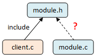
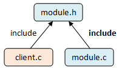

Home
-
The Many Adventures of Zhuangbility - January 11, 2015
Origin
I should have started this blog long long ago, but failed. Last week, Eric asked Zhang Yu and me to actually do something, to record some thoughts and funny things, so now, here it is.
Hakyll
In fact, I have tried Hakyll once two years ago, but gave up quickly, due to my laziness. :p Nevertheless, Haskel is good for zhuangbility, so I’m back!
Self-Cultivation of me, a coder
Yes, it’s a blog of a coder, is this a good title?
Test CSS:
from functools import reduce _Meta = ((1000, 'M'), (900, 'CM'), (500, 'D'), (400, 'CD'), (100, 'C'), (90, 'XC'), (50,'L'), (40, 'XL'), (10, 'X'), (9, 'IX'), (5, 'V'), (4, 'IV'), (1, 'I')) def romanize(number): def next(result, remain, radix, symbol): while remain >= radix: result, remain = (result + symbol, remain - radix) return result, remain r, _ = reduce(lambda r, m:next(*(r+m)), _Meta, ('', number)) return rReferences
-
On Code Optimization - September 1, 2014
Software Exorcism
Recent months, Eric, Harry and I has translated a book, Software Exorcism, into Chinese version, and here is the translators’ preface written by Eric. It’s a book on debugging and optimizing legacy code, but in this blog, I’ll only talk about a little thought on optimization.
Branch Elimination
Check the below C code, it has a if-else statement which would created a branching structure in machine code eventually:
#include <string.h> typedef unsigned char BOOLEAN; #define TRUE 1 #define FALSE 0 BOOLEAN editName(char *name) { if (strlen(name)>0) { return(TRUE); } else { return(FALSE); } }Let’s compile it by gcc on a x86 platform (in fact, I’m using gccbolt, on which you can try different platforms):
editName(char*): pushq %rbp movq %rsp, %rbp movq %rdi, -8(%rbp) movq -8(%rbp), %rax movzbl (%rax), %eax testb %al, %al je .L2 movl $1, %eax jmp .L3 .L2: movl $0, %eax .L3: popq %rbp retAs you can see, there is a branch in above asm code,
je .L2, seems it’s a optimization point if we really despaired in performance target. So the book author suggested to optimize it as below:BOOLEAN editNameWithoutBranch(char *name) { return(strlen(name)); }Let’s check the result on the same platform:
editNameWithoutBranch(char*): pushq %rbp movq %rsp, %rbp subq $16, %rsp movq %rdi, -8(%rbp) movq -8(%rbp), %rax movq %rax, %rdi call strlen leave retWhat’s changed here? We can see there is no branching instruction in the asm code generated from
editNameWithoutBranch, but (here comes the truth) there is a function call onstrlen, which is eliminated in the if-else version. For if-else version, gcc is smart enough to generated some code asif (name[0] == 0)(testb %al %al), instead of calling thestrlen.So, which version would be better in performance? It depends, different platforms (mostly impacted by CPU architecture) give different results, but at least we know, optimizing at such a low lever may not a wise thing to do, compiler can do smart things for us, and usually it’s better than most programmers at most time.
Now, to get the most out of compiler intelligence, let’s try
-O2for above code, I got:editName(char*): cmpb $0, (%rdi); compare name[0] with '\0' setne %al ret editNameWithoutBranch(char*): subq $8, %rsp call strlen addq $8, %rsp retThis time, you can figure out the winner easily,
return name[0] != '\0';is definitely faster thanreturn strlen(name);.But Why?
The reason why compiler can optimize away the calling to
strlenin theeditNamelies in the definition ofTRUEandFALSE, as you can see, they’re just constant values, on the contrary,editNameWithoutBranchreturns a type ofBOOLEANwhich is type-defined asunsigned char, which various from 0 to 255, so the compiler can’t eliminate the calling ofstrlen.If we change the return type to real
boolean, see what would happen:bool editNameWithBoolean(char *name) { return strlen(name); }Compile it with
gcc -std=c99 -O2:editNameWithBoolean(char*): cmpb $0, (%rdi) setne %al retIt’s identical with the if-else version in
-O2, so, that’s it!Conclusion
Like the book author mentioned in his book, I think finding/using a better algorithm (strategy) is more important things for a programmer to do, because low-level optimization like the above case is a territory of compilers, it’s where compilers are shining, usually doing bettering than most programmers. What compiler can’t do better is knowing the purpose of your program, so, as a rational programmer, we’d better to invest our energy on high-level optimization like algorithms or code designs when it comes to optimize code performance.
Reference
- Check out compiling tactics at Compiler Warnings are Your Friends.
-
Do I need to include .h file in .c with same name? - February 24, 2014
This is also a blog of the Compiler Warnings are Your Friends series.
The Problem
client.cis using a functionint foo(int a), which is implemented inmodule.c, and declared inmodule.h. It’s obvious thatclient.cmust includemodule.h, otherwise the compiler would complain about undeclaredfoo(), but what is not so obvious to many engineers: shall I include module.h in module.c?“It’s not needed if module.c doesn’t use structures/types defined in module.h.”, someone would say.
Case Study
We don’t like gamble, let’s try the above example, say we have 3 files,
module.cdoesn’t includemodule.hhere:$ cat -n module.c 1 //#include "module.h" 2 3 int foo(int a, int b) 4 { 5 return a/b; 6 } $ cat -n module.h 1 #ifndef _MODULE_H_ 2 #define _MODULE_H_ 3 4 int foo(int a); 5 6 #endif $ cat -n client.c 1 #include <stdio.h> 2 3 #include "module.h" 4 5 int main(void) 6 { 7 int i=3; 8 printf("foo(%d): %d\n", i, foo(i)); 9 10 return 0; 11 }Now let’s build them and execute the output:
$ gcc -g -Wall -Wextra -c -o client.o client.c $ gcc -g -Wall -Wextra -c -o module.o module.c $ gcc -o output client.o module.o $ ./output $ foo(3): 0Do you see something very bad are happening? The definition and declaration of foo are different but GCC build them without any complain! i.e. This code has just fooled the compiler and the linker, but the worst part happens at runtime, while it didn’t crash to warn us, instead, it just sneaked into the stack, grabbed a random value as its second argument,
int b, then left us with a surprising output! (Well, it might crash on some environment, if foo got a zero asint b, the behavior is undefined).Now, let’s include
module.hinmodule.c, try what we’d find this time:$ cat -n module.c 1 #include "module.h" 2 3 int foo(int a, int b) 4 { 5 return a/b; 6 }$ cc -g -Wall -Wextra -c -o module.o module.c module.c:4: error: conflicting types for ‘foo’ module.h:4: error: previous declaration of ‘foo’ was hereThis one line including created an explicit relationship between
module.candmodule.h, so GCC figured out that mistake and failed the compiling, that’s what we’d eagerly expected, rather than a bug found by feature test, system test, or even by our beloved customers, right?Answer
So, now, your questions should have melted away, with the below figure shows what you shall do, and you’ve already understood the reason behind it:
BTW, grabing some declarations by something like
extern int foo(int a);should be considerated harmful too, it just like a dialect of this kind of mistakes we’re trying to avoid, because the extern stuff might be out of date, it would also breaks the relationship among functions’ declarations and definitions.Solution
But that only leads us to another trouble: how can I find all of these potential bugs, i.e ‘definitions without declarations’ in my code? It’s quite a lot of tedious hours to find them, right?
Praying for a salvation? Here it is:
Compiler warnings are your friends.
In this case, GCC has an option
-Wmissing-prototypes(or-Wmissing-declarations), which can find exactly such kind of carelessness, let’s comment the include again and compilemodule.cwith this option:$ cat -n module.c 1 //#include "module.h" 2 3 int foo(int a, int b) 4 { 5 return a/b; 6 }$ gcc -c -o module.o -Wall -Wextra -Wmissing-declarations module.c module.c:4: warning: no previous declaration for ‘foo’See? GCC did all the dirty works for you!
Reference:
-
Format Types Mismatch in printf/fprintf - April 25, 2013
This is one blog of the Compiler Warnings are Your Friends series.
Demonstrate Code
One of my colleagues met a crash issue of his code, so he consulted me, below code are simplified for the key point only.
#include <stdio.h> int main() { unsigned long long num = 4294967299ull; /*(0x100000003)*/ unsigned int a = 5; const char* pa = "pa"; printf("size:%d,llu:%llu\n", sizeof(num), num); printf("a:%d,num:%lu,pa:%p\n", a, num, pa); printf("a:%d,num:%lu,pa:%s\n", a, num, pa); return 0; }The Compiler Warning
Let’s compile the above code:
$ gcc -o llu llu.c llu.c:9:5: warning: format ‘%lu’ expects argument of type ‘long unsigned int’, but argument 3 has type ‘long long unsigned int’ [-Wformat]It means we provided a
long long unsigned intargument, but use “%lu” to format it in printf. Nevertheless, the build is successful. (In fact, there are more than one mistake within above code, and you’ll get more warnings if compiled it with a modern compiler, e.g. use%dto print the result of sizeof, which is typed assize_t. But, let’s focuse on thelluissue first);Result of Running it
On a x86 (little-endian) PC, I got (Probably you’ll get different result on a 64bit machine):
$ ./llu size:8,llu:4294967299 a:5,num:3,pa:0x1 /bin/bash: line 1: 3440 Segmentation fault (core dumped) ./lluAs you can see, the value of num can be printed correctly by “%llu” in the first printf, but in second printf its value changed to 3 instead of 4294967299, and the followed
pagot a value0x1(obviously it’s a wrong pointer value). Even worse, the third printf caused a ‘Segmentation fault’.Analysis
In the second
printf, we use “%lu” in the format string, soprintfgrabbed 4 low bytes (0x00000003) fromnum, i.e. it was truncated, hence we got “num:3”. Then “%p” grabbed the left 4 high bytes of num (0x00000001), printed it as a pointer value, so we got “pa:0x1”.In the third
printf, the story is similar, butprintftried to dereference the invalid pointer address (i.e. “0x1”) when it met “%s”, so the program crashed.The stack frame of printf:
Variable Value “pa” (4 bytes) a pointer “num” (8 bytes) 0x0000000100000003 “a” (4 bytes) 0x00000005 Interpreted incorrectly as:
Interpration Value ignored (4 bytes) pointer to pa “%p” (4 bytes) pa : 0x00000001 “%lu” (4 bytes) num : 0x00000003 “%d” (4 bytes) a : 0x00000005 Solution and Suggestion
Firstly, as I mentioned in Compiler Warnings are Your Friends, you should fix all the compiler warnings, and turn on “-Werror” finally. Then this kind of bug would never leak to other people.
And the solution is very simple, just use correct length modifiers in format instrcutions:
hh, h, l, ll, etc.If you’re working on platform which has
<inttypes.h>, it’s better to make it cross-platform by using macros it provides:#include <inttypes.h> int64_t it; uint64_t ut; printf("%" PRId64 "n", it); printf("%" PRIu64 "n", ut);Please find more details about
inttypes.hat stackoverflow.Reference
-
Compiler Warnings are Your Friends - February 26, 2013
Origin
One of my colleagues has posted a blog talking about a bug related with a GCC option
-fstrict-aliasing, and someone pointed out that the compiler has already warned them about the bug in the compiling log, but that team just ignored the warning.Then you may suggest all of us should treat compiling warnings seriously, it couldn’t turn into a bug, waste lots of time of many colleagues.
So why not turn on
-Werrorinto compile flags always, then build would fail instantly if there are warnings reported, then engineers won’t ignore them unconsciously? In fact, many components in our system has already took this action.Reasons for Haven’t Doing So
But why not all of C/C++ components using
-Werror? I guess:- They’re legacy code, and there are too many warnings in their components, if they turn on
-Werror, the CI build would fail for a long time and the team would got blamed by many angry colleagues. - Some compiler warnings are really not problems, or not worth to fix them all.
Solution for #1
- when you have time, or feel bored, check out a clean copy of the code.
- turn on
-Werror, compile; - fix some of the warnings reported by compiler in a time-box;
- turn off
-Werror, check-in those fix; - repeat 1-4 until all warnings are fixed, then turn on the flag permanently.
Solution for #2
Before doing below actions, discuss with other experts and be 100% sure there are no solutions for the warnings you’re dealing with, in my experience that’s not the case in most of times. But if you’re really on bad luck, try below:
- Turn off some specific compile options by
-Wno-<xxx>, e.g.-Wno-write-strings, -Wno-long-long, -Wno-unused-value - Split code into different groups, configure different compile flags for different groups of code. e.g. use “
-Wall -Wextra -Wno-write-strings” for C source code, use “-Wall -Wextra -pedantic-errors” for C++ source code, use-Wpermissivefor the source code generated by some code generating scripts without self-discipline. Usually this kind of configuration requires makefile support.
But why should I care those dirty secrets of compilers? because:
Compiler Warnings are Your Friends
- Catch Bugs Before Testing
For example we have below code:
if (queue_handle = msg_queue_handle) { printf("message queue is empty.\n"); }Compiler can help you to catch the annoying bug:
src/demo.c:247:19: warning: using the result of an assignment as a condition without parentheses [-Wparentheses] if (queue_handle = msg_queue_handle) ~~~~~~~~~~~~~^~~~~~~~~~~~~~~~~~ src/demo.c:247:19: note: place parentheses around the assignment to silence this warning if (queue_handle = msg_queue_handle) ^ ( )below code is another real-life example:
if (tmp_value != (SUM_OF_VALUES - last_value)); { //code here... }Can you find the bug at first glance? Probably not, but the compiler never get drunk:
../uglified_file_name.c:161:52: error: if statement has empty body [-Werror,-Wempty-body] if (tmp_value != (SUM_OF_VALUES - last_value)); ^- Catch Bugs that are Hard to Find Even in Testing
if (TYPE_T_VIP == type) { status = get_customer_name(name, parent_name); if (status != OK) { return status; } // bunch of ugly code here... status = decode_customer_info(parent_name, &parent_id, &type); if (status != OK) { log_error( MODULE_CUSTOMER, __func__, "get parent id of %s failed, status 0x%x", status ); return status; } } acquireLock(customer_entry_lock); status = update_customer(customer_db, parent_id, &db_customer_profile, &db_vip_profile); releaseLock(customer_entry_lock);Like above code, they appears in a very long function, bugs are growing very easily in complex logic, and again compiler can find it for you:
../customers.c:556:11: error: variable 'parent_id' is used uninitialized whenever 'if' condition is false [-Werror,-Wsometimes-uninitialized] if (TYPE_T_VIP == type) { ^~~~~~~~~~~~~~~~~~If the first if-statement evaluated to false, then the variable
parent_idwould never be initialized bydecode_customer_info, so it’s uninitialized when used inupdate_customer(...).Summary
- Compiler warnings are helpful, combined use with
-Werrorcan prevent bugs at the very beginning. - Some warnings are annoying, but you have ways to suppress them.
Reference
Backwards Reference
- They’re legacy code, and there are too many warnings in their components, if they turn on
-
What's the difference between `foo(void)` and `foo(void)`? - January 13, 2013

Problem
Let’s begin with a little bit of C code:
//void.h int foo(); //void.c int foo(int x) { return x+1; } //main.c #include <stdio.h> #include "void.h" int main() { printf("foo:%d\n", foo()); return 0; }Use below command to compile and link them together:
gcc *.c -o void -Wall -WextraWhich result do you expect?
- gcc warns about unmatched prototypes of ‘foo’;
- compilation is OK, but run the ‘./void’ results into a ‘segmentation fault’;
- compilation is OK, but run the ‘./void’ prints a random value.
. . . . . . . .
The result is the 3rd one in my environment, gcc gives no warnings on this piece of code, the result is random, but it works without any segmentation fault.
Analysis
The mumbo-jumbo behind it is how gcc inteprete the decleraration in
void.h, as ANSI C mentioned:The empty list in a function declarator that is not part of a function definition specifies that no information about the number or types of the parameters is supplied.
As it implies, the declaration
int foo();infoo.hdoesn’t meanfoohas no parameter, it means not specified. Hence, gcc accepts it because it doesn’t conflict withint foo(int x)(though the result is unexpected).The story can’t endup here, next question should be how to express a funtion doesn’t have any parameter?
Let’s refer to ANSI C paper again:
The special case of void as the only item in the list specifies that the function has no parameters.
No surperise what the above code actually saying is
int foo(void);.Solution
But you can imagine if this scenario happened it might cost an engineer lots of time to debug. How to avoid such boring things? The GCC compile option
-Wstrict-prototypesis a simple and elegent method you’re looking for:gcc *.c -o void -Wall -Wextra -Wstrict-prototypesnow gcc generates warnings like:
void.h:1: warning: function declaration isn’t a prototype
It helps you to find all those potential issues.
Note
- C++ works on strict prototypes by default, so
int foo();has the same meaning withint foo(void);in C++; - Some compilers don’t generate any warning in my test, please find documents here if you want to know more.
- Check out compiling tactics at Compiler Warnings are Your Friends.
Many thanks to xkcd.com for the comic at begin, along with many other instresting comics, and its kind license.
…or you can find more in the archives.